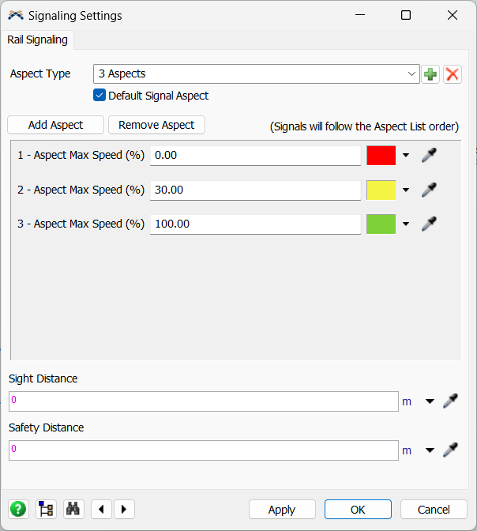
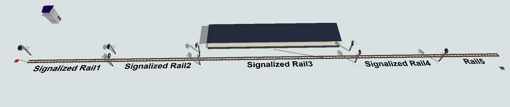
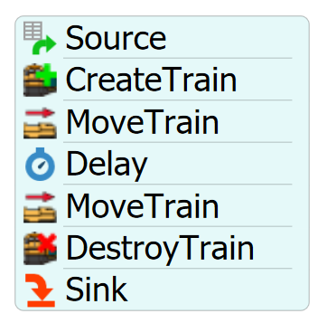
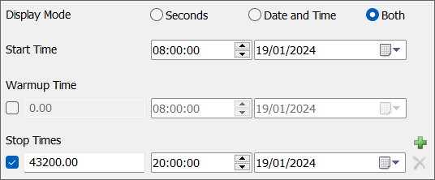

Exercise Information
A signalized rail track has a signal interval of 200m until it reaches a 50m lenght signalized
rail that access a passenger station. The time interval between trains is 80s and they spend
120s at the station to execute all the passengers board/unboard operations. The Signalized Rails
follow the 3 aspect signal type, formed by red, yellow and green light. When the train faces a yellow light
it must reduce its speed to 30% of the maximum allowed on track. After reaching the end of signalized
track, the trains must be moved to a sink.
Step 1 Signal Settings
The first step to use the Rail Signal System is to configure the settings and define the
Signal Aspects settings and the default aspect that the rails will assume when created.
To access the signal settings, follow the steps:
- Drag one Signalized Rail to the model.
- Access the RailSystem properties and click on the "Signal Settings" button and select
the "3 aspects" aspect type.
- Check the checkbox "Default Signal Aspect", so all the next Signalized Rails created
on the model will follow this Signal Aspect.
- Change the Aspect Max Speed of the yellow aspect to 30.
- Press OK to apply the signal settings change and close the GUI.
- Change the previously created SignalizedRail aspect to "3 Aspects" at the Signalized Rail properties.

Step 2 Creating objects
In order to achieve the solution for the problem, you should create the
following objects:
- Create one SourceTrain.
- Create another SignalizedRail.
-
Connect SourceTrain to the SignalizedRail1 (using the A key) and then connect
SignalizedRail1 to SignalizedRail2 via proximity.
- Set a virtual distance to both SignalizedRails of 200 meters.
- Create another SignalizedRail and resize it to 50 meters length (X).
- Connect the SignalizedRail3 to SignalizedRail2 via proximity.
- Create a RailControlPoint and place it near the end of the SignalizedRail3.
-
Create a passenger station near SignalizedRail3 and connect the
central port to the RailControlPoint (using the S key).
- Create another SignalizedRail and connect it to SignalizedRail3 via proximity.
- At the end of the track, create a normal Rail, connect it to SignalizedRail4 via proximity.
- Place a sink near Rail5, no connections needed.
Your model should be looking like this:

Step 3 Processflow Configuration
In order to achieve the solution for the problem, you should create the
following processflow tasks:
- Create a Schedule Source.
- Create a "CreateTrain" activity.
- Create a "MoveTrain" activity.
- Create a "Delay" activity.
- Create a "MoveTrain" activity.
- Create a "DestroyTrain" activity.
- Create a Sink.
Your processflow should be looking like this:

To configure your processflow tasks follow the steps:
- On Source, check the checkbox "Repeat Schedule" and configure 2 arrivals. The first
arrival will occur at time 0 with quantity 1, and at the second arrival set the time to 90 and
the quantity to 0. This way, 1 train will arrive every 80 seconds at the model.
-
On "CreateTrain" activity, point the "Source Train" reference to your SourceTrain.
Set the "Locomotive Type" to Passenger and set the train color of your preference.
-
On "MoveTrain" activity, set train reference to "token.train" and destiny to the
RailControlPoint on SignalizedRail3.
-
On "Delay" activity, set the Delay Time to 120 seconds, this will represent all the load/unload
operations at the station.
-
On the second "MoveTrain" activity, set train reference to "token.train" and destiny to
the last rail, Rail5.
-
On "DestroyTrain" activity, set train reference to "token.train" and "Sink" reference
to the Sink next to Rail5.
Lastly, configure your simulation time to start at 8a.m. and end at 8p.m.

With this configuration your model is ready.